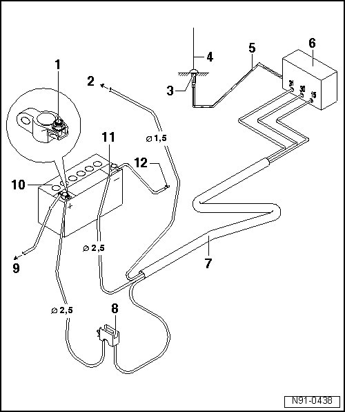

Cellular Phone Transceiver: Locations
Battery, Transmitter and Receiver Unit, Fuse and Wiring Harness Overview

1 - Positive connection
• red wire with suitable connection
2 - to terminal 15a
• connection to terminal 15a,
• ensure wire is protected by fuse
• Fuse max. 15A
3 - Antenna ground
• ensure correct ground connection to body
• Antenna location must be treated with suitable corrosion protection
4 - Transmitting/Receiving Antenna
• Installation locations, refer to --> [ Transmitted Output, Antenna Installation Locations ] Transmitted Output, Antenna Installation Locations
5 - Shielded antenna wire
• Wire with coaxial connector
6 - Telephone or two-way radio transmitter/receiver unit
7 - Wiring harness
• Voltage supply positive via read wire, 2.5 mm2 cross section
• Voltage supply negative via brown wire, 2.5 mm2 cross section
• If necessary, wire to terminal 15a via black wire 1.5 mm 2 cross section
8 - Fuse Holder
• Install next to battery
9 - To starter
10 - Battery
• Installation location under left front seat and with two battery systems, also in luggage compartment in spare wheel well.
11 - Negative wire
12 - Body ground